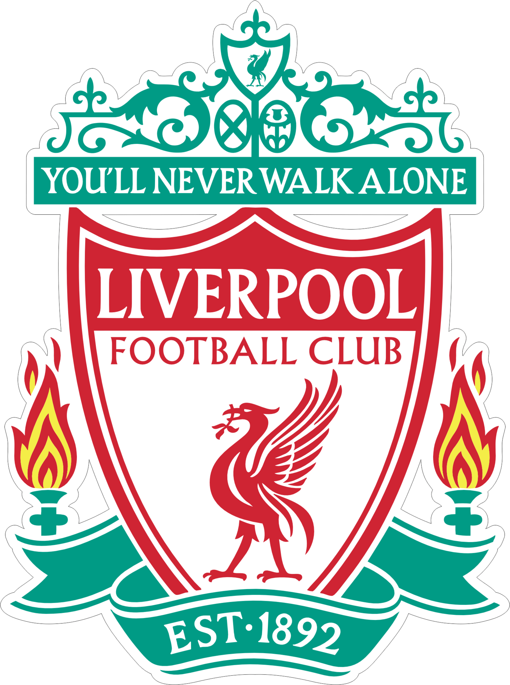
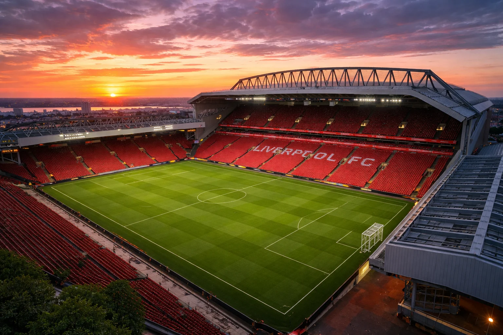

Liverpool Football Club
Fondé en 1892, Liverpool joue à Anfield, dans le nord-ouest de l’Angleterre. Son hymne célèbre est « You’ll Never Walk Alone ».

Joueurs légendaires
| Joueur | Nationalité | Période au club | Buts au club |
|---|---|---|---|
| Ian Rush | Galloise | 1980–1987, 1988–1996 | 346 |
| Roger Hunt | Anglaise | 1958–1969 | 285 |
| Gordon Hodgson | Anglaise | 1925–1936 | 241 |
Palmarès
| Compétition | Nombre de titres | Dernier titre |
|---|---|---|
| UEFA Champions League | 6 | 2019 |
| Premier League | 20 | 2025 |
| FA Cup | 8 | 2022 |
Chant du club
You’ll Never Walk Alone
Stade d’Anfield
